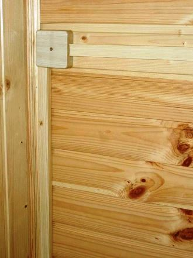
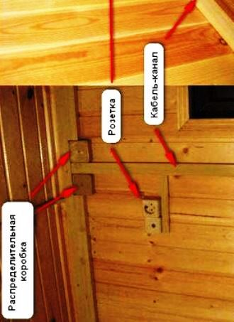

Качественный электромонтаж в Санкт-Петербурге и ленобласти, стаж 12 лет. Частный электрик, недорого и качественно.
Тел. 8 904 642 08 57 Николай.

Проводка в дачном доме.
Расценки посмотрите ниже.
Добро пожаловать на сайт частного электрика. Данная статья посвящена теме: «Проводка в дачном доме». В ней Вы найдете ответы на вопросы, касающиеся особенностей такой проводки, необходимых материалов и других важных моментов.
Электрик по проводке на даче.
Частный электрик с достаточно большим опытом (20 лет). Работу свою люблю и всегда стараюсь выполнить ее качественно. Имею необходимое (среднее и высшее) образование, все допуски для работ на высоковольтных линиях и лицензии. В совершенстве владею современными технологиями и работаю исключительно с проверенным материалом и профессиональным инструментом. Объект сдаю в строго оговоренные с заказчиком сроки, предварительно подписав договор. По окончанию работ даю гарантию на все услуги. Мои цены ориентированы на среднего потребителя.
Сколько стоит электромонтаж в частном доме?
|
Площадь пола частного дома, кв. м. |
Цены за электромонтаж в рублях. |
|
60 кв. м. |
50 000 |
|
80 кв. м. |
57 000 |
|
100 кв. м. |
65 000 |
|
130 кв. м. |
80 000 |
|
150 кв. м. |
100 000 |
|
180 кв. м. |
125 000 |
|
200 кв. м. |
150 000 |
Многие дачные дома – деревянные, а это, как говорят, пожарные «легко сгораемые материалы». И часто причиной пожара в доме является неисправность электропроводки (50% всех случаев).
Подключение к электропитанию очень важный момент для любого дачника. На это идет много времени и немало финансов, поскольку, электричество несет в дом тепло и свет, а еще во многом облегчает домашнюю работу, благодаря электроприборам.
Как сделать так, чтобы то, что наживалось годами, в считанные минуты не превратилось в груду головешек? А неисправный электроприбор не ударил током? Ответ один – выполнять электромонтаж дачного дома должен исключительно профессионал и никакие книжки и статьи из интернета здесь не помогут.
Преимущества дипломированного специалиста «на лицо»: специальные знания, подкрепленные достаточным практическим опытом и выполнение работ в соответствии с требованиями СНиП.
План выполнения работ по проводке в дачном доме:
- Составление схемы;
- Составление примерной сметы необходимых материалов;
- Собственно закупка;
- Практическая сторона выполнения.
Первоочередная задача состоит в составлении электро схемы дачного дома. Здесь следует отметить количество электрических приборов, их мощность и место, где они будут установлены. В этот список входят, как розетки с выключателями, так и лампы, бра и бытовые приборы. Следует определиться с видом кабеля (медный или алюминиевый), его количеством и сечением.
Определить сечение легко.
Для этого необходимо просчитать приблизительную мощность всех потребителей. Я, как профессионал, рекомендую приобретать медный, многожильный кабель. Может это дороже, но зато более надежно и долговечно.
Далее определяемся с типом монтажа – скрытая или наружная проводка. Первый более эстетичный, но существенно дороже. Второй тип – менее эстетичный, однако, более практичный.
И еще один важный момент: мощный потребитель электропитания подключите отдельно. Я советую вместо одного входного автомата, как это делается в дачных домах, установить несколько автоматов.
Пусть это будет дороже, но так удобней и безопасней.
Надеюсь, данная статья была полезной. Если есть вопросы, обращайтесь по телефону или оставляйте заявку на сайте.


Сколько будут стоить материалы.
Расценки на электропроводку.
Электромонтаж в доме.
Замена электропроводки в двухкомнатной квартире?.
Сколько стоит сделать внутреннюю проводку?.
Установка люстр и светильников.
Электромонтаж проводов в бане.
